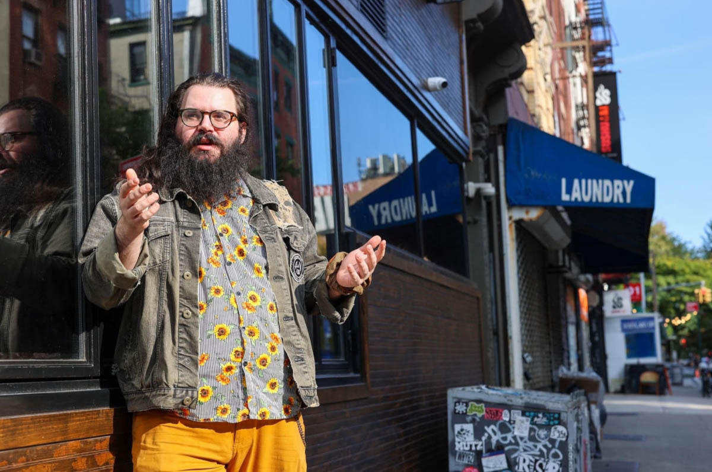

Humans of New York
Humans of New York began as Brandon Stanton's photography project in 2010. The initial goal was to photograph 10,000 New Yorkers on the street, and create an exhaustive catalogue of the city’s inhabitants.
Taken together, these portraits and captions became the subject of a vibrant blog. HONY now has over twenty million followers on social media, and provides a worldwide audience with daily glimpses into the lives of strangers on the streets of New York City.


